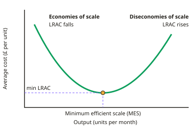

A-level Business Year 13 · Topic 8
Strategic methods: growth and how to pursue strategies
This topic covers the methods a business uses to pursue its strategy, especially how it grows.
We compare economies and diseconomies of scale, organic and external growth, joint ventures and franchising, and reasons to stay small.
Then we look at innovation, digital strategies, and operational choices such as lean production, outsourcing and offshoring.
- 8 subtopics
- 263 questions
- Free: 8.1 notes and 10 questions
In this topic
- 8.1Changing scale: economies and diseconomies of scaleFree below · 31 questions
- 8.2Organic (internal) growthOpen in Full Marks · 27 questions
- 8.3External growth: mergers, takeovers and acquisitionsOpen in Full Marks · 23 questions
- 8.4Joint ventures, strategic alliances and franchisingOpen in Full Marks · 27 questions
- 8.5Reasons for staying small and Greiner's growth modelOpen in Full Marks · 51 questions
- 8.6Innovation strategies: R&D, product and process innovationOpen in Full Marks · 31 questions
- 8.7Digital technology and e-commerce strategiesOpen in Full Marks · 34 questions
- 8.8Operational strategies: lean production, outsourcing, offshoring and locationOpen in Full Marks · 39 questions
8.1 · Free notes
Changing scale: economies and diseconomies of scale

Key points
- Economies of scale are falling long-run average costs (LRAC) as output rises. Average cost = total cost ÷ output, so they exist only if total cost rises proportionally less than output.
- Internal economies come from the firm's own growth: purchasing (bulk-buying), technical (large machines, the container principle, automation), managerial (specialist managers), financial (cheaper borrowing) and marketing (spreading advertising costs).
- Spreading fixed costs is the core mechanism: AC = FC ÷ Q + VC per unit, so as Q rises the fixed element per unit falls. Example: fixed costs £120,000 at 40,000 units adds £3 per unit.
- External economies of scale arise from the industry or area growing, not the individual firm. Examples are an industrial cluster, a local skilled labour pool, specialist suppliers and better infrastructure.
- Minimum efficient scale (MES) is the lowest output at which LRAC is minimised. Firms below MES have a cost disadvantage. Industries with a high MES, such as car making, tend to be dominated by a few large firms.
- Diseconomies of scale are rising LRAC beyond a certain size. Causes are poor communication, slow decision-making, coordination problems across layers or sites, and demotivation and alienation of workers.
- External diseconomies can arise when an industry or area grows too large. Examples are congestion, rising rents and wages in a cluster, and competition for scarce skilled labour.
- The LRAC curve is U-shaped: falling (economies), flat at MES (constant returns to scale), then rising (diseconomies). Don't confuse this with the short-run law of diminishing returns, which is about adding variable factors to fixed capacity.
- Ways to reduce diseconomies: delegation or decentralisation, a flatter structure, better ICT and communication, splitting into divisions or profit centres, and employee engagement (empowerment, profit-sharing). Firms may also scale down (retrenchment or rationalisation), but this brings redundancy costs.
- Evaluation: scale matters more in capital-intensive, standardised industries than in labour-intensive or niche ones. Cost savings only boost competitiveness or profit if the firm keeps them or passes them on in lower prices. The gains may take time to appear, and bigger isn't always better.
In more detail
- Spreading fixed costs: FC £600,000 and VC £8 per unit → AC at 50,000 units = £12 + £8 = £20, but at 150,000 units = £4 + £8 = £12.
- The container principle: doubling the dimensions of a tank multiplies its capacity by 8 but its surface area, and so its material, by only 4, so bigger containers cost less per unit stored.
- Cluster example: many Formula 1 teams are based in "Motorsport Valley" around Oxfordshire and Northamptonshire, sharing specialist suppliers and engineers.
- MES and market structure: if minimum efficient scale is 30% of total market output, only about three firms can produce at lowest cost, so the industry tends towards oligopoly.
Practice
Changing scale: economies and diseconomies of scale: 10 questions
Pick an answer to check it, or open the answer for the explanation.
1. Which is an example of a technical economy of scale?
- Receiving a bulk discount on raw materials
- Using a large automated line whose cost is spread over high output
- Hiring specialist finance managers
- Borrowing at a lower interest rate
Show answer
B: Using a large automated line whose cost is spread over high output. Technical economies come from larger, more efficient machinery and the container principle. Bulk discounts are purchasing, specialists are managerial and cheaper loans are financial.
2. A bakery's total cost is £30,000 for 20,000 loaves. Output rises to 50,000 loaves at a total cost of £60,000. What happens to average cost per loaf?
- Stays at £1.50
- Rises from £1.20 to £1.50
- Falls from £1.50 to £1.00
- Falls from £1.50 to £1.20
Show answer
D: Falls from £1.50 to £1.20. £30,000 ÷ 20,000 = £1.50; £60,000 ÷ 50,000 = £1.20. Costs rose by 100% but output rose by 150%, so economies of scale cut unit cost.
3. A firm with 6,000 staff finds decisions now take weeks because they pass through nine layers of management. This is most likely:
- A purchasing economy of scale
- An external economy of scale
- A technical economy of scale
- A communication diseconomy of scale
Show answer
D: A communication diseconomy of scale. Long chains of command slow communication and decision-making, a classic internal diseconomy of scale that raises average costs.
4. What is the minimum efficient scale (MES)?
- The output at which profit is maximised
- The lowest output at which long-run average cost is minimised
- The output at which total cost is lowest
- The smallest output a firm can legally produce
Show answer
B: The lowest output at which long-run average cost is minimised. MES is the lowest level of output at which LRAC reaches its minimum. Producing below it leaves the firm with higher unit costs than larger rivals.
5. Which is an external economy of scale for a firm in an industrial cluster?
- The firm builds a larger factory
- A local college trains workers in skills the whole industry needs
- The firm appoints more specialist managers
- The firm negotiates a bulk-buying discount
Show answer
B: A local college trains workers in skills the whole industry needs. External economies arise from the growth of the industry or area, benefiting all firms in it. The other options come from the individual firm's own growth, so they are internal.
6. A firm has fixed costs of £120,000 a year and variable costs of £4 per unit. What is its average cost per unit at 40,000 units?
- £4
- £3
- £10
- £7
Show answer
D: £7. AC = (£120,000 + £4 × 40,000) ÷ 40,000 = £280,000 ÷ 40,000 = £7. That is £3 of fixed cost per unit plus £4 variable cost.
7. Which statement about diseconomies of scale is correct?
- Total costs fall as output increases
- They cannot be reduced by restructuring
- They only occur in very small firms
- Long-run average cost rises as output increases
Show answer
D: Long-run average cost rises as output increases. Diseconomies of scale are defined as rising LRAC as output grows. Firms can reduce them by delegation, flatter structures or splitting into divisions.
8. A craft furniture maker makes bespoke handmade items using skilled workers. Why will it probably gain few economies of scale?
- Its production is labour-intensive with little scope for standardisation
- Craft goods always have falling demand
- It faces no variable costs
- Small firms are banned from bulk buying
Show answer
A: Its production is labour-intensive with little scope for standardisation. Handmade, customised output limits technical economies from automation and standardisation, so unit costs fall little as output rises.
9. Output of 1,000, 2,000, 3,000 and 4,000 units has total costs of £50,000, £80,000, £135,000 and £240,000. Diseconomies first appear as output rises from:
- 1,000 to 2,000
- 2,000 to 3,000
- 3,000 to 4,000
- They never appear
Show answer
B: 2,000 to 3,000. Average costs are £50, £40, £45 and £60. They fall to 2,000 units (the MES), then rise from £40 to £45 between 2,000 and 3,000 units.
10. A supermarket secures an 8% discount from suppliers by ordering ten times as much stock. Which economy of scale is this?
- Marketing
- Managerial
- Purchasing
- Financial
Show answer
C: Purchasing. Lower unit prices from ordering in bulk are a purchasing (bulk-buying) economy of scale.
Keep going in Full Marks
Full Marks has 31 questions on Changing scale: economies and diseconomies of scale (21 more than here), set out in practice levels. You also get notes and 3D models for all 8 subtopics of Strategic methods: growth and how to pursue strategies, plus games, timed exams and past papers.